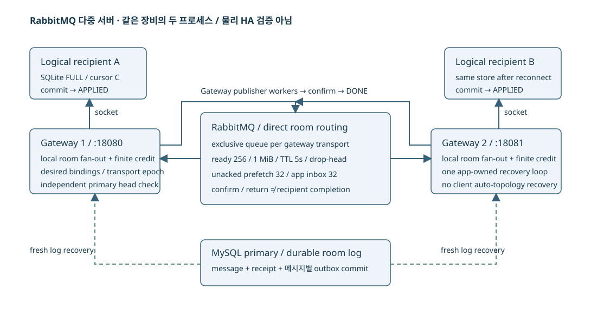

STORYBRIDGE · 설계와 검증
RabbitMQ 기반 다중 gateway 메시지 전달
gateway별 queue 라우팅과 broker 단절·서버 종료 시 로그 복구
여러 gateway에 연결된 사용자에게 메시지를 전달하기 위해 RabbitMQ를 연동했다. 방별 routing key로 구독이 있는 gateway에 알림을 전달하고, gateway 내부에서 연결별 팬아웃을 수행한다. broker 알림이 유실되거나 gateway가 종료된 경우에는 MySQL 로그와 클라이언트 cursor를 기준으로 복구한다.
gateway별 exclusive queue를 두고 publisher confirm, consumer ACK, 소켓 쓰기, 로컬 적용을 별도로 처리했다. 두 gateway에서 정상 전달, broker 단절, queue overflow, ACK 이후 프로세스 종료와 다른 gateway로의 재접속을 검증했다.
단일 서버 개선과 별도로 구현한 RabbitMQ 구성이다. 최종 초기 구독·재접속 변경을 이 구성에 통합한 시험은 수행하지 않았다. 최종 구현의 비교 결과
시스템 구성

gateway별 queue와 방별 라우팅
고정 구성원 채팅의 메시지는 primary에 commit될 때 방의 roomSeq와 메시지별 outbox를 함께 얻는다. gateway마다 연결된 구독을 로컬에서 팬아웃한다. RabbitMQ direct exchange의 routing key는 room이다. 각 gateway transport 세대에 exclusive auto-delete queue 하나를 만들고, 그 gateway에 실제 desired 구독이 있는 방만 bind한다. 사용자·기기마다 broker queue를 만들지 않는다.
queue는 개별 사용자 대신 gateway 단위로 만들었다. 실시간 알림 유실은 독립 head 대조와 DB 로그로 회복할 수 있어 queue를 영속 메시지 로그처럼 운영하지 않는다. Redis Pub/Sub도 같은 로그 복구 계약으로 비교할 수 있지만 queue 상한·prefetch·confirm/return·부분 전달을 검증하기 위해 RabbitMQ를 선택했다. Kafka·Relay·Redis 구현은 비교 범위에서 제외했다.
저장·발행·수신 단계별 확인 응답
- MySQL transaction commit: receipt와 roomSeq가 확정되고 STORED를 반환할 수 있다.
- publisher confirm/mandatory return: broker가 발행을 처리했는지와 온라인 route 부재를 구분한다. 클라이언트 수신 여부는 별도로 확인한다.
- consumer ACK: gateway의 유한 앱 큐에서 로컬 전달 엔진으로 넘겼다는 뜻이다.
- socket write: 운영체제/연결로 보낸 경계이며 실제 로컬 commit은 아니다.
- SQLite/IndexedDB commit 후 APPLIED: 해당 logical recipient가 연속 cursor를 영속 적용한 경계다.
온라인 route가 하나도 없으면 NO_ONLINE_ROUTE라는 이유로 outbox를 완료할 수 있다. 메시지는 DB에 남아 다음 구독 때 복구된다. 반대로 broker 단절·confirm 결과 불명은 durable 의도를 남기고 재시도한다. 발행 뒤 DONE 전 종료는 중복을 만든다. confirm만으로 모든 gateway queue에 보존됐다고 해석하지 않는다. drop-head가 발생한 일부 queue의 과거 알림은 DB 복구 의무로 남는다.
broker 재연결과 topology 복원
RabbitMQ Java client 5.37.0 의 자동 연결·topology 복구는 끄고 애플리케이션 control loop 한 곳에서 재연결한다. consumer와 publisher connection은 분리하고, transport epoch를 증가시켜 이전 channel의 늦은 callback이 새 연결 상태를 갱신하지 못하게 한다. consumer 등록·binding RPC가 끝나고 readyVersion이 현재 desiredVersion과 일치할 때만 새 구독에 READY를 준다.
broker 단절 중 방 101 을 해제하고 방 102 를 구독했다면, 재연결 시에도 변경된 binding을 복원해야 한다. 재연결 과정에서 desired set을 다시 비교하고 현재 버전의 방 102 route를 만든다. 시험에서는 consumer 연결만 management API로 끊어 WebSocket을 살려 둔 상태에서 이 교체를 수행했다. 실제 broker binding 목록을 앱의 desired/ready 목록과 독립 대조했다.
broker가 끊겨도 MySQL primary에 접근할 수 있고 읽기·전송 여력이 남아 있으면, 독립 head 조회와 DB 로그 복구로 수신을 이어갈 수 있다. broker 단절 자체를 곧바로 복구 실패로 판정하지는 않는다. 다만 영구적인 broker 단절, DB 단절, 지속 과부하까지 포함해 무조건 완료를 보장하는 것은 아니다. 복구 진전은 DB 접근, 유효한 보관 범위와 처리 여력에 의존한다. 같은 세대의 pending과 backlog는 새 연결로 이어서 감사한다.
느린 gateway와 queue overflow
기본 queue는 ready256 개/1MiB, TTL5 초, drop-head다. consumer prefetch32 와 앱 큐 32 가 별도 상한이다. ready 상한만 보고 unacked와 앱 적재량을 빠뜨리지 않는다. publisher confirm 대기는 1500ms, watchdog은 정지된 발행 연결을 닫아 control loop가 계속 진전하도록 한다. gateway별 queue·prefetch·앱 큐 상한을 각각 적용했다.
처음 400 개 발행 시험은 ready197/unacked32 를 보았지만 TTL 만료와 용량 초과를 구분하지 못했다. 다음 시험은 ready 상한 32, TTL60 초로 분리하고 120 개를 발행했다. 만료 전 실제 ready32/unacked32 와 총 보존량<120 을 확인했다. 느린 consumer를 풀면 손실 알림 구간까지 DB로 복구하고 양쪽 SQLite 원장이 마지막 seq에 도달했다. 이는 기본 queue256 의 성능 수치가 아니라 같은 drop-head 경계를 분리한 장애 시험이다.
동시에 다른 방의 메시지를 네 차례 보내 영속 적용 시간을 기록했다. 각 T44 실행의 normal_room_seconds가 실제 표본이며 표본이 네 개이므로 p99 분석에는 사용하지 않았다. 큰 인기 방·지속 신규 메시지·재접속 폭주의 정상 방 영향은 k6 혼합 부하와 별도 원장의 결과를 이어서 봐야 한다.
consumer ACK 이후 gateway 종료 시험
gateway2 에서 broker ACK 이후 socket write 직전 barrier를 잡았다. client cursor가 진전하지 않은 것을 확인하고 해당 JVM을 종료했다. 같은 SQLite 파일의 logical recipient를 gateway1 에 연결해 이전 cursor부터 누락을 복구했다. 동일 recipient의 미완료 전달 의무를 이어서 대조했다. broker 재기동 시험도 프로세스가 살아났다는 사실에서 끝내지 않고 pending outbox 감소·복구 시작 시 고정한 목표 순번 H까지 연속 적용·새 SEND 적용까지 확인했다.
두 JVM·broker·MySQL은 같은 노트북의 같은 전원·디스크·OS에 있다. 이 결과는 라우팅·세대·실패 복구 프로토콜의 검증이다. 물리 고가용성, 여러 서버의 네트워크 지연, 독립 장애 도메인이나 선형 처리량 확장을 입증하지 않는다. RabbitMQ·공유 복구의 CPU/RSS는 broker까지 합치고, 연결·queue·운영 복잡성 비용을 단일 공유 조회·표현 캐시와 비교한다.
broker 중단·복구 관측값
아래는 별도 진단 회귀 실행 중 실제 API와 SQL을 읽은 관측값이다. 원래 성능 측정 순간의 화면으로 소급하지 않으며, API별 조회가 하나의 원자적 snapshot인 것도 아니다. 당시 시각과 검증 실행의 연결은 원본에 보존했다.
SQL·JFR 진단 자료
{
"gateway18080": {
"peers": 1,
"global_credit": 0,
"batch_pending": 0,
"history_queries": 58,
"shared_live_issued": 202,
"outbox_done": 97,
"broker_confirms": 99,
"broker_consumer_acks": 164,
"broker_transport_epochs": 14,
"heap_used": 67597376,
"gc_ms": 52
},
"gateway18081": {
"peers": 1,
"global_credit": 0,
"batch_pending": 0,
"history_queries": 38,
"shared_live_issued": 106,
"outbox_done": 22,
"broker_confirms": 24,
"broker_consumer_acks": 76,
"broker_transport_epochs": 15,
"heap_used": 29137184,
"gc_ms": 48
},
"mysql_outbox": {
"DONE": 17701,
"PENDING": 60
},
"broker": "unavailable"
}전체 SQL·프레임·관측값
두 서버·MySQL·브로커의 관측값
{
"gateway18080": {
"peers": 1,
"global_credit": 0,
"batch_pending": 0,
"history_queries": 58,
"shared_live_issued": 202,
"outbox_done": 97,
"broker_confirms": 99,
"broker_consumer_acks": 164,
"broker_transport_epochs": 14,
"heap_used": 67597376,
"gc_ms": 52
},
"gateway18081": {
"peers": 1,
"global_credit": 0,
"batch_pending": 0,
"history_queries": 38,
"shared_live_issued": 106,
"outbox_done": 22,
"broker_confirms": 24,
"broker_consumer_acks": 76,
"broker_transport_epochs": 15,
"heap_used": 29137184,
"gc_ms": 48
},
"mysql_outbox": {
"DONE": 17701,
"PENDING": 60
},
"broker": "unavailable"
}당시 진단에서 수집한 SQL·프로파일·관측값이다. 전체 결과는 아래 상세 자료에서 확인할 수 있다.
SQL·JFR 진단 자료
{
"gateway18080": {
"peers": 1,
"global_credit": 0,
"batch_pending": 0,
"history_queries": 80,
"shared_live_issued": 203,
"outbox_done": 127,
"broker_confirms": 129,
"broker_consumer_acks": 225,
"broker_transport_epochs": 40,
"heap_used": 85423168,
"gc_ms": 52
},
"gateway18081": {
"peers": 1,
"global_credit": 0,
"batch_pending": 0,
"history_queries": 59,
"shared_live_issued": 107,
"outbox_done": 53,
"broker_confirms": 55,
"broker_consumer_acks": 137,
"broker_transport_epochs": 41,
"heap_used": 45914400,
"gc_ms": 48
},
"mysql_outbox": {
"DONE": 17762
},
"broker_queue_totals": {
"messages": 0,
"messages_ready": 0,
"messages_unacknowledged": 0,
"messages_details": {
"rate": 0.0
},
"messages_unacknowledged_details": {
"rate": 0.0
},
"messages_ready_details": {
"rate": 0.0
}
}
}전체 SQL·프레임·관측값
두 서버·MySQL·브로커의 관측값
{
"gateway18080": {
"peers": 1,
"global_credit": 0,
"batch_pending": 0,
"history_queries": 80,
"shared_live_issued": 203,
"outbox_done": 127,
"broker_confirms": 129,
"broker_consumer_acks": 225,
"broker_transport_epochs": 40,
"heap_used": 85423168,
"gc_ms": 52
},
"gateway18081": {
"peers": 1,
"global_credit": 0,
"batch_pending": 0,
"history_queries": 59,
"shared_live_issued": 107,
"outbox_done": 53,
"broker_confirms": 55,
"broker_consumer_acks": 137,
"broker_transport_epochs": 41,
"heap_used": 45914400,
"gc_ms": 48
},
"mysql_outbox": {
"DONE": 17762
},
"broker_queue_totals": {
"messages": 0,
"messages_ready": 0,
"messages_unacknowledged": 0,
"messages_details": {
"rate": 0.0
},
"messages_unacknowledged_details": {
"rate": 0.0
},
"messages_ready_details": {
"rate": 0.0
}
}
}당시 진단에서 수집한 SQL·프로파일·관측값이다. 전체 결과는 아래 상세 자료에서 확인할 수 있다.
실제 장애 시험의 판정
| 실행 | 경계 | 시험 | 판정 | 시험 소요 |
|---|---|---|---|---|
| 기능 검증 / 장애·기능 검증 / 확인 | T15 | cross-gateway | PASS | 2.82s |
| 기능 검증 / 장애·기능 검증 / 확인 | T16 T31 T32 X01 | topology-recovery | PASS | 1.29s |
| 기능 검증 / 장애·기능 검증 / 확인 | T17 | broker-outage | PASS | 17.45s |
| 기능 검증 / 장애·기능 검증 / 확인 | T18 | gateway-after-broker-ack | PASS | 6.49s |
| 기능 검증 / 장애·기능 검증 / 확인 | T44 | queue-overflow | PASS | 13.78s |
| 기능 검증 / 장애·기능 검증 / 확인 | T06 T07 | duplicate-no-route | PASS | 0.80s |
| 기능 검증 / 장애·기능 검증 / 확인 | T44 | queue-overflow | FAIL | 9.40s |
| 기능 검증 / 장애·기능 검증 / 확인 | T44 | queue-overflow | PASS | 16.03s |
| 기능 검증 / 장애·기능 검증 / 확인 | T15 | cross-gateway | PASS | 2.83s |
| 기능 검증 / 장애·기능 검증 / 확인 | T16 T31 T32 X01 | topology-recovery | PASS | 1.73s |
| 기능 검증 / 장애·기능 검증 / 확인 | T17 | broker-outage | PASS | 17.37s |
| 기능 검증 / 장애·기능 검증 / 확인 | T18 | gateway-after-broker-ack | PASS | 6.38s |
| 기능 검증 / 장애·기능 검증 / 확인 | T44 | queue-overflow | PASS | 19.31s |
| 기능 검증 / 장애·기능 검증 / 확인 | T06 T07 | duplicate-no-route | PASS | 1.04s |
| 기능 검증 / 장애·기능 검증 / 확인 | T19 T20 T21 T22 | representation-cache-boundaries | PASS | 3.04s |
| 기능 검증 / 장애·기능 검증 / 확인 | T15 | cross-gateway | PASS | 3.26s |
| 기능 검증 / 장애·기능 검증 / 확인 | T16 T31 T32 X01 | topology-recovery | PASS | 1.89s |
| 기능 검증 / 장애·기능 검증 / 확인 | T17 | broker-outage | PASS | 20.83s |
| 기능 검증 / 장애·기능 검증 / 확인 | T18 | gateway-after-broker-ack | PASS | 7.40s |
| 기능 검증 / 장애·기능 검증 / 확인 | T44 | queue-overflow | PASS | 18.86s |
| 기능 검증 / 장애·기능 검증 / 확인 | T06 T07 | duplicate-no-route | PASS | 1.24s |
| 기능 검증 / 장애·기능 검증 / 확인 | T15 | cross-gateway | PASS | 3.17s |
| 기능 검증 / 장애·기능 검증 / 확인 | T16 T31 T32 X01 | topology-recovery | PASS | 1.48s |
| 기능 검증 / 장애·기능 검증 / 확인 | T17 | broker-outage | PASS | 20.67s |
| 기능 검증 / 장애·기능 검증 / 확인 | T18 | gateway-after-broker-ack | PASS | 6.93s |
| 기능 검증 / 장애·기능 검증 / 확인 | T44 | queue-overflow | PASS | 19.26s |
| 기능 검증 / 장애·기능 검증 / 확인 | T06 T07 | duplicate-no-route | PASS | 1.05s |
| 기능 검증 / 장애·기능 검증 / 확인 | T19 T20 T21 T22 | representation-cache-boundaries | FAIL | 2.05s |
| 기능 검증 / 장애·기능 검증 / 확인 | T15 | cross-gateway | FAIL | 2.68s |
| 기능 검증 / 장애·기능 검증 / 확인 | T16 T31 T32 X01 | topology-recovery | FAIL | 2.16s |
| 기능 검증 / 장애·기능 검증 / 확인 | T17 | broker-outage | FAIL | 2.15s |
| 기능 검증 / 장애·기능 검증 / 확인 | T18 | gateway-after-broker-ack | FAIL | 2.18s |
| 기능 검증 / 장애·기능 검증 / 확인 | T44 | queue-overflow | PASS | 15.70s |
| 기능 검증 / 장애·기능 검증 / 확인 | T06 T07 | duplicate-no-route | PASS | 1.06s |
| 기능 검증 / 장애·기능 검증 / 확인 | T15 | cross-gateway | PASS | 2.25s |
| 기능 검증 / 장애·기능 검증 / 확인 | T16 T31 T32 X01 | topology-recovery | PASS | 1.71s |
| 기능 검증 / 장애·기능 검증 / 확인 | T17 | broker-outage | PASS | 35.27s |
| 기능 검증 / 장애·기능 검증 / 확인 | T18 | gateway-after-broker-ack | PASS | 5.62s |
| 기능 검증 / 장애·기능 검증 / 확인 | T44 | queue-overflow | PASS | 16.99s |
| 기능 검증 / 장애·기능 검증 / 확인 | T06 T07 | duplicate-no-route | PASS | 1.04s |
| 기능 검증 / 장애·기능 검증 / 확인 | T19 T20 T21 T22 | representation-cache-boundaries | PASS | 2.64s |
| 기능 검증 / 장애·기능 검증 / 확인 | T20 T21 T22 | representation-cache-boundaries | PASS | 2.52s |
| 기능 검증 / 장애·기능 검증 / 확인 | T15 | cross-gateway | PASS | 2.80s |
| 기능 검증 / 장애·기능 검증 / 확인 | T16 T31 T32 X01 | topology-recovery | PASS | 1.24s |
| 기능 검증 / 장애·기능 검증 / 확인 | T17 | broker-outage | PASS | 17.59s |
| 기능 검증 / 장애·기능 검증 / 확인 | T18 | gateway-after-broker-ack | PASS | 6.37s |
| 기능 검증 / 장애·기능 검증 / 확인 | T44 | queue-overflow | PASS | 18.91s |
| 기능 검증 / 장애·기능 검증 / 확인 | T06 T07 | duplicate-no-route | PASS | 1.00s |
| 기능 검증 / 장애·기능 검증 / 확인 | T20 T21 T22 | representation-cache-boundaries | PASS | 2.63s |
좁은 화면에서는 표를 좌우로 이동할 수 있습니다. 수치와 단위는 원본의 반복별 값을 유지했습니다.
표의 소요 시간은 시험 전체이며 복구 지연과 같지 않다. 고정 목표 순번 H·연결 세대·큐 상태·연속 cursor·미완료는 연결된 상세 원본에서 확인할 수 있다. 앞선 실패나 TTL 조건이 혼입된 결과를 후속 성공으로 덮어쓰지 않았다.
다중 gateway·broker의 자원 비용
| 구현 / 경로·조건 | 논리 호출 / 저장 / 거절 / 최종 미확정 | 발생부족 지표 p99 / drop(전체) | 저장 응답 / 비지연 수신자 p99(ms) | 미완료 / 프로토콜 오류 | 서버 CPU / RSS |
|---|---|---|---|---|---|
| RabbitMQ·공유 복구 / 인기 방 100 건/초 · 60 초 / 반복 1 http · 인기 방 · 256 conn · 100/s · 60s 512B · slow 0 명 · VU 64 · 반복 1 | 6,000 / 5,774 / 226 / 0 | 12.0ms / 0 | 28.0 / 87.0 | 0 / 0 | 360.0% / 1243MiB |
| RabbitMQ·공유 복구 / 인기 방 100 건/초 · 60 초 / 반복 2 http · 인기 방 · 256 conn · 100/s · 60s 512B · slow 0 명 · VU 64 · 반복 2 | 6,001 / 5,397 / 604 / 0 | 16.0ms / 0 | 41.0 / 135.0 | 0 / 0 | 392.0% / 1235MiB |
| RabbitMQ·완료 알림 복구 / 인기 방 100 건/초 · 60 초 / 반복 1 http · 인기 방 · 256 conn · 100/s · 60s 512B · slow 0 명 · VU 64 · 반복 1 | 6,001 / 3,761 / 2,240 / 0 | 30.0ms / 0 | 111.0 / 290.0 | 0 / 0 | 558.9% / 1234MiB |
| RabbitMQ·완료 알림 복구 / 인기 방 100 건/초 · 60 초 / 반복 2 http · 인기 방 · 256 conn · 100/s · 60s 512B · slow 0 명 · VU 64 · 반복 2 | 6,000 / 4,305 / 1,695 / 0 | 20.0ms / 0 | 87.0 / 237.0 | 0 / 0 | 544.0% / 1243MiB |
| RabbitMQ·완료 알림 복구 / 인기 방 100 건/초 · 60 초 / 반복 3 http · 인기 방 · 256 conn · 100/s · 60s 512B · slow 0 명 · VU 64 · 반복 3 | 5,996 / 3,859 / 2,137 / 0 | 71.0ms / 5 | 93.0 / 237.0 | 0 / 0 | 546.8% / 1235MiB |
| RabbitMQ·수신 버퍼 개선 / 인기 방 100 건/초 · 60 초 / 반복 1 http · 인기 방 · 256 conn · 100/s · 60s 512B · slow 0 명 · VU 64 · 반복 1 | 6,001 / 3,319 / 2,681 / 1 | 28.0ms / 0 | 131.8 / 323.0 | 0 / 0 | 586.4% / 1224MiB |
| RabbitMQ·수신 버퍼 개선 / 인기 방 100 건/초 · 60 초 / 반복 2 http · 인기 방 · 256 conn · 100/s · 60s 512B · slow 0 명 · VU 64 · 반복 2 | 5,995 / 3,102 / 2,892 / 1 | 89.0ms / 6 | 148.0 / 376.0 | 0 / 0 | 572.7% / 1225MiB |
| RabbitMQ·수신 버퍼 개선 / 인기 방 100 건/초 · 60 초 / 반복 3 http · 인기 방 · 256 conn · 100/s · 60s 512B · slow 0 명 · VU 64 · 반복 3 | 6,001 / 3,241 / 2,760 / 0 | 31.0ms / 0 | 147.2 / 322.0 | 0 / 0 | 590.6% / 1223MiB |
| RabbitMQ·완료 알림 복구 / 혼합 250 건/초 · 90 초 / 탐색·진단 http · 인기·일반 혼합 · 500 conn · 250/s · 90s 512B · slow 0 명 · VU 64 · 반복 0 | 22,299 / 9,876 / 12,388 / 35 | 890.0ms / 208 | 321.5 / 82720.0 | 1,003,508 / 0 | 536.8% / 1401MiB |
| RabbitMQ·수신 버퍼 개선 / 혼합 250 건/초 · 90 초 / 탐색·진단 http · 인기·일반 혼합 · 500 conn · 250/s · 90s 512B · slow 0 명 · VU 64 · 반복 0 | 22,415 / 10,579 / 11,815 / 21 | 344.0ms / 83 | 268.2 / 100101.0 | 0 / 0 | 503.0% / 1346MiB |
좁은 화면에서는 표를 좌우로 이동할 수 있습니다. 수치와 단위는 원본의 반복별 값을 유지했습니다.
단일 JVM heap768MiB와 비교해 RabbitMQ·공유 복구/RabbitMQ·완료 알림 복구/RabbitMQ·수신 버퍼 개선은 JVM256MiB 두 개+broker alarm256MiB를 배분하고, 연결 pool도 6 개씩으로 총 12 개를 맞춘다. CPU cycle job에는 MySQL과 broker까지 포함한다. gateway 내부 worker 수와 routing/confirm 경계는 구조 차이이므로 따로 기록한다. broker의 실제 RSS가 alarm과 다를 수 있고 두 JVM의 기본 메모리·GC·heartbeat·관리 API 비용도 서버 합계에 포함된다. RabbitMQ·수신 버퍼 개선의 입력 조립 16MiB 상한은 gateway별이므로 합계 32MiB이고 각 256MiB heap 안에서 사용한다. 단일 수신 버퍼 개선의 16MiB와 내부 예산까지 모두 같다고 주장하지 않는다.
프로토콜 동작 근거와 검증 조건
publisher confirm과 consumer ACK, queue length/drop-head, Java client recovery를 선택 버전의 실제 동작과 대조했다. broker ACK를 로컬 적용으로 바꾸지 않는 것이 핵심이다.
추가 실험 조건
제약 사항
두 JVM·MySQL·RabbitMQ를 같은 노트북에서 실행했다. 검증 범위는 라우팅과 장애 복구 프로토콜이며 물리 HA·다중 호스트 확장성은 포함하지 않는다. 단일 서버와의 성능 차이는 각 실험의 조건과 총자원 비용을 기준으로 비교한다.